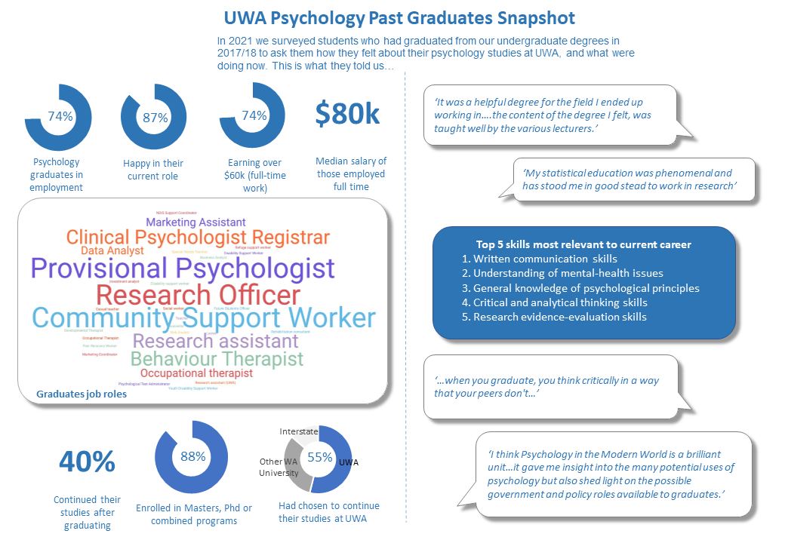
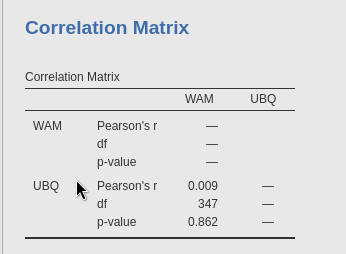

Table of Contents
- 1. Lab 1 Summary - Measuring Psychology
- 2. Lab 2 Summary - Methods
- 3. Lab 3 Summary - Methods
- 4. Lab 4 Summary - Results
- 5. Lab 5 Summary - Results
- 6. Lab 6 Summary - Discussion
- 7. Lab 7 Summary - Discussion
- 8. Lab 8 Summary - Introduction
- 9. Lab 9 Summary - Introduction
- 10. Lab 10 Summary - Abstract
- 11. Lab 11 Summary - Abstract
- 12. Lab 12 Summary - Revision
- 13. Belongingness & Academic Achievement
1. Lab 1 Summary - Measuring Psychology
This lab was just about the research participation / essay options.
2. Lab 2 Summary - Methods
2.1. Lecture content
2.1.1. Key messages from Week 1
Lecture experiment: Chocolate experiment. Did you enjoy more with others or alone etc.etc. Link to actual experiment: https://doi.org/10.1177/0956797614551162 Boothby, E. J., Clark, M. S., & Bargh, J. A. (2014). Shared Experiences Are Amplified. Psychological Science, 25(12), 2209–2216.
2.1.2. Method section
The method section describes how a study addresses a research question. It includes:
- Information about the participants in the experiment
- Description of materials used to conduct the experiment and how they work
- Description of the procedure of different components of the experiment i.e. order of completion.
2.2. UBQ
The questionnaire in the UBQ is the self-report psychological measure. This was a correlational experiment.
3. Lab 3 Summary - Methods
3.1. Methods
3.1.1. Frank et al. 2008
This study was about determining if speaking a language without words for exact numbers, such as the language of the Pirahã Multi Choice Answers
- What order were the match-tasks?
- one-to-one match, uneven match, orthogonal match, hidden match, “nuts in a can” task.
- Which match task was associated with the greatest number of individual participant errors?
- Hidden match task. 5 participants made one error, and 1 participant made several.
- Which statement best reflects the response format?
- Experimenters present a line of spooled thread; participants must create a line with the same quantity of balloons. (experimenter cut some string, asked participant to create a line of balloons of same length)
- Why was the same response format used in each of the tasks?
- To ensure that failure in more difficult tasks was not due to differences in response format.
3.1.2. Rambaugh (1988)
This study was about determining if chimpanzees could consistently sum quantities in order to pick the larger quantity. Multi Choice Answers
- What is the best statement regarding the allocation of values for Quantities in Common (CQ)?
- Accross both wells of chocolate chips for each tray, exactly two wells always contained the same quantity of chocolate chips.
- What statement is the best regarding the allocation of values for other quantities (OQ)?
- Each of the two OQ values could not be equal to each other, or to CQ values.
- Which statement is the best concerning the ratios formed by summed values for each of the two trays?
- A ratio of 5:9 reflects a greater percentage difference between quantities of chocolate on each tray than a ratio of 2:3
- Which statement is the best concerning the correction of responses in the experiment?
- Chimps were rewarded with the chocolates on their selected tray, no matter whether or not they were correct.
4. Lab 4 Summary - Results
4.1. Lab report reading
4.1.1. Fernald et al. 2013
This experiment was about determining how Socioeconomic Status (SES) affects your language processing and vocabulary skills. Multi Choice Answers
- What statement best describes the associations of interest in the experiment?
- The association that SES has with expressive vocabulary and spoken language processing.
- Which statement most accurately and comprehensively describes the findings of the experiment, concerning the relationship between changes in vocab from 18-24 months and SES group?
- High SES children had significantly greater gains in vocabulary scores between 18-24 months compared to Low SES children.
- Which statement most accurately describes the findings of the experiment concerning the relationship between changes in processing efficiency and SES group?
- High SES children had significantly greater accuracy than low SES children; High SES children were significantly faster at word recognitioin than low SES children.
- Which statement most accurately and comprehensively describes the findings of the experiment concerning the relationship between accuracy from 18-24 months and SES groups?
- High SES children at 18 months performed the same as low SES children at 24 months
4.1.2. The second part of this lab was about the results of the Belongingness and academic achievement study, so will be in that section.
4.1.3. Ways of knowing: Quantitative measures
Much of what we know about behaviour is based on quantifying abilities and the difference between people in terms of numbers. By quantifying values, we can have a representation of the population.
4.2. Results section
Basically just present your results, statistical significances, and more, but don’t infer or elaborate anything. That’s the discussion section.
5. Lab 5 Summary - Results
5.1. Lab report reading
5.1.1. Harris et al. 2016
This study aimed to asses the stability of personality traits accross the lifespan by having participants complete questionnaires at the age of 14 and 77 Multi Choice Questions
- According to Deary et al. (2008, as cited in Harris et al., 2016), dependability represents which of the following traits best?
- Perseverance, conscientiousness, stability of moods
- Referring to the ‘Longitudinal Personality Stability Correlations’ section in Harris et al. (2016), what is the Spearman’s p coefficient comparing teacher and self ratings for stability of moods (not IQ-residualized)?
- 0.12
- Referring to the ‘Personality and Wellbeing’ section in Harris et al. (2016), what is the correlation between self-rated dependability in old age and the measure of mental wellbeing?
- 0.54
- Referring to the ‘Personality and Intelligence’ section in Harris et al. (2016), what is the size, direction, and significance of the correlation between adolescent dependability and the SB IQ?
- Medium, positive, significant
5.1.2. Who are you study
Multi Choice Answers
- Based on the data collected in the ‘Who Are You’ survey, which statement best describes the data for the ‘hours of study’ variable? Select the most accurate answer.
- The mean number of hours studied was 19.6 hours; the data is positively skewed
- Based on the data collected in the ‘Who Are You’ survey, what is the Spearman correlation coefficient and p-value for the correlation between WAM and hours spent working? What does this reveal about the significance of the correlation?
- ρ = -0.229, p = 0.015; significant correlation
- Based on the median, what activities do most students spend the most hours engaged in each week? Additionally, for which activity is there the greatest variation in hours spent engaged?
- Sleep; study
- Based on the data collected in the ‘Who Are You’ survey, which of the following statements is true regarding the Spearman correlation between WAM and hours spent studying, and between WAM and hours spent sleep?
- None of the following: WAM/sleep correlation is greater than the WAM/study correlation, the WAM/sleep correlation is statistically significant, the WAM/study correlation is statistically significant. The WAM/study correlation is greater than the WAM/sleep correlation, but neither are statistically signifficant.
6. Lab 6 Summary - Discussion
6.1. Lab report Reading
6.1.1. Prunty et al. 2020
This experiment was about determining the stigma and self stigma around weight. MCQ Answers
- Which statement most accurately captures the findings of Prunty et al. (2020) regarding the prevalence of enacted weight stigma?
- Previous studies have underestimated the prevalence of enacted weight stigma; using weight-based discrimination as a measure of enacted weight stigma is not sufficient
- Which statement most accurately captures the findings of Prunty et al. (2020) regarding the prevalence of enacted weight stigma and weight self-stigma?
- For people classified as overweight, the prevalence of weight self-stigma is greater than enacted weight stigma; this finding has not been reported in other studies
- Which statement most accurately captures the findings of Prunty et al. (2020) regarding the contributions of beliefs about obesity to weight stigma?
- Most individuals believe they are personally responsible for controlling their weight; this belief increases the odds of weight self-stigma after controlling for BMI, age, and gender
- Which statement most accurately captures the reported limitations and implications for future research in Prunty et al. (2020)?
- This study did not represent all racial and ethnic groups equally; the measure of enacted weight stigma used in this study has not been validated
6.2. APA Rules
Quiz MCQ answers
- Which of the following sentences is correctly formatted according to APA 7 guidelines?
- Researchers have shown that people who watch Star Trek have higher IQs than people who watch Star Wars (Gillen & Ruane, 2013; Lam et al., 2020).
- Which of the following sentences is correctly formatted according to APA 7 guidelines?
- The resilience of West Coast Eagles (WCE) fans has been a subject of interest recently; however, early research by Van Kins and Bougoure (2007) and Smart and Hamersley (2015) shows that Fremantle Dockers fans have greater long-term resilience than WCE fans.
- Which of the following sentences is correctly formatted according to APA 7 guidelines?
- In their study, Ranjbar et al. (2019) found that researchers who used APA correctly were rated higher in attractiveness than researchers who use MLI or Chicago.
- Which of the following sentences does NOT accurately and completely report the statistics for an (imaginary!) study testing the effect of checking emails on quiz scores, according to APA 7 guidelines?
- The descriptive statistics for PSYC1102 quiz scores are presented in Table 1. An independent samples t-test revealed a significant difference in quiz scores between participants who check their emails (M = 75%, SD = 9%) and participants who do not check their emails (M = 68%, SD = 10%), t(450) = 4.65, p = .012, d = 0.72. Participants who checked their emails scored higher in the PSYC1102 quizzes than participants who did not.
6.2.1. APA Rules summary
- APA 7 Referencing Formatting:
- In-text citations with the author’s last name and publication year (Smith, 2020).
- For direct quotes, include page numbers (Smith, 2020, p. 45).
- Reference list at the end of the paper.
- Alphabetize references by the author’s last name.
- Include the author’s full last name and initials.
- Italicize book and journal titles.
- Use “et al.” for references with more than two authors.
- Include DOIs for electronic sources.
Example: In-text citation: (Smith, 2020) Direct quote with page number: (Smith, 2020, p. 45) Reference list: Smith, J. A. (2020). Title of the Book. Publisher. Doe, M. B. (2019). Title of the Article. Journal of Citation, 30(2), 123-145. Johnson, P. C., et al. (2021). Title of the Study. Academic Press. Garcia, S. (2018). Website Title. https://www.example.com.
6.3. Discussion
The discussion section is for inferring results, explaining how the results go against your hypothesis, and potential for future study.
7. Lab 7 Summary - Discussion
7.1. Lab Report Readings
7.1.1. Deacon and Maack 2008
This experiment was about assessing whether the use of safety behaviours to prevent feared outcomes related to contamination contributes to the development and exacerbation of anxiety symptoms. MCQ A’s:
- Which statement is correct concerning the impact of contamination-related safety behaviours on anxiety in Deacon and Maack’s (2008) experiment?
- Frequent use of contamination-related safety behaviours increases contamination concerns; this may be explained by increased attention to contamination-related information
- Deacon and Maack (2008) describe a similarity between one of their findings and a pre-existing model in the literature. Which of the following pairs of constructs do the authors compare the cause of?
- Contamination-related fears and panic disorder
- What are some limitations of the study as described by Deacon and Maack (2008)?
- Can’t generalise findings to individuals with OCD; behavioural avoidance tasks didn’t elicit much anxiety; participants may have deduced the study hypotheses and altered their responses
- In Deacon and Maack’s (2008) experiment, ‘increased familiarity due to repeated exposure to the same behavioural tasks’ was proposed as an explanation for what?
- Decreased anxiety and feelings of contamination during the first baseline phase
7.2. What Aboriginal Knowledge can teach us about happiness
Ted talk:
MCQ A’s:
- Over a decade ago the Australian government rallied to close the gap for Aboriginal people who were far behind other Australians on measures of success, education, and health. According to Sheree Cairney, what was their major oversight?
- All of the following: Aboriginal people were compared to other Australians based on a Westernized world view, The measures used did not reflect the values and skills of Aboriginal people, This system was implicitly culturally biased in a way that sets Aboriginal people up to fail
- Sheree Cairney discussed how Aboriginal people are falling short of standards of success dictated by the Australian government. Based on Sheree’s experiment conducted with Aboriginal people in remote communities, which of the following statements best reflects her findings?
- Despite the statistics, Aboriginal people feel happy; they predict this will improve over time
- Sheree Cairney proposed the ‘Interplay Wellbeing Framework’ to integrate the values indicative of success of both the Australian government and Aboriginal people. What are the respective values of each group according to this framework?
- Aboriginal people: community, culture, and empowerment; Australian government: health, education, and employment
- According to Sheree Cairney, what is a ‘culture-based economy’? What is an example of someone living in such an economy?
- An economy in which individuals participate by practicing their own culture; an Aboriginal person working as a ranger, utilizing their own knowledge of the land
8. Lab 8 Summary - Introduction
8.1. Lab Report Readings
8.1.1. Strauss et al.
This experiment was about exploring the experiences of trans and gender diverse young people in Australia, who have previously sought mental health support from therapists, counsellors, psychiatrists and/or inpatient care providers. MCQ A’s:
- Which statement most accurately reflects the mental health concerns of trans and gender diverse youths according to Strauss et al. (2021)?* Belongingness and Academic Achievement
- The prevalence of anxiety and/or depression is approximately 75% in trans and gender diverse youths; under 50% of trans and gender diverse youths have attempted suicide
- Which statement best describes the major findings of previous research according to Strauss et al. (2021)?
- Mental health professionals do not appropriately engage in gender discussions with trans and gender diverse youths; mental health professionals are not well educated on trans and gender diverse health, concerns, and experiences
- Which statement best describes the rationale of the study by Strauss et al. (2021)?
- There isn’t much research on the accessibility of mental health services for trans and gender diverse youths; poor mental health in this population calls for more research
- There isn’t much research on the accessibility of mental health services for trans and gender diverse youths; poor mental health in this population calls for more research
- To explore the experiences of trans and gender diverse youths who have tried to access mental health support
8.2. The rest of this lab was about plagiarism, which I’m fairly sure we’ll be fine for. The only fucky thing is reference your own work because you can technically plagiarise yourself.
8.3. Introduction
The part of your lab report where you introduce previous research, the idea of your research, what you aim to achieve etc. Yknow, the introduction part.
9. Lab 9 Summary - Introduction
9.1. Lab Report Reading
9.1.1. Sauce et al. 2022
This experiment was about assessing whether intelligence in children is impacted by digital media, such as video games, video watching, and social media, whilst controlling for the influence of genetic factors and socioeconomic status. 9855 children from the USA were assessed for intelligence at age 9-10 and 5169 were assessed again two years later to determine the impact of digital media on their intelligence. MCQ A’s:
- Which statement best describes the current research on the impact of screen time on intelligence according to Sauce et al. (2022)?
- There are mixed findings about the association between screen time and intelligence
- According to Sauce et al. (2022), which of the following factors complicates research on the effects of screen time on intelligence?
- Different types of screen time may have different effects intelligence
- According to Sauce et al. (2022), the contradiction among previous studies regarding the impact of screen time on intelligence is likely due to what?
- Not controlling for genetic and socioeconomic influences
- Which statement best reflects the aim of the study proposed by Sauce et al. (2022)?
- To determine the impact of different types of screen time on intelligence in a longitudinal sample with a large sample size, whilst controlling for the influence of socioeconomic and genetic factors
9.2. Full Scale IQ test
MCQ A’s:
- Why is 100 the average score for every scale?
- Raw scores are rescaled so that the average raw score has a scaled score of 100.
- What domains of intelligence are measured by the full scale IQ test?
- Short-term memory, verbal, and reasoning
- What do the creators of the full scale IQ test state as the purpose of the test?
- For educational purposes only
- How would you describe the correlation between the full scale IQ test and the Wechsler Adult Intelligence Scale?
- Large, positive, and significant
10. Lab 10 Summary - Abstract
10.1. Lab report reading
10.1.1. Steiger et al. 2023
This experiment was about exploring if desired personality trait change is possible through intervention by examining the effectiveness of a 3-mo digital personality change intervention. MCQ A’S:
- Did Stieger et al. (2021) include important information from each of the key sections of their article?
- They mentioned something from all the key sections
- Stieger et al. (2021) mentioned their findings in the abstract. Is the information provided here sufficient to fully understand the findings?
- No; the abstract only summarises the findings and more information is necessary to fully understand these findings
- Stieger et al. (2021) briefly mentioned the importance of their findings in their abstract. Which of these discussion sub-categories best reflects the information they reported in the abstract?
- Discussion of how their findings contribute to their field of research
- Stieger et al. (2021) included an overview of the topic of interest in their abstract. Is the information provided sufficient to understand the rationale of the study?
- Yes; the gap in previous research clearly highlighted the purpose of the study
10.2. Abstract
The very start of your lab report - a quick summary of all sections in one paragraph ~ 150 words.
10.3. Personality Quiz
MCQ A’s:
- What type of approach do the IPIP Big Five Personality Test and 16Personalities test use?
- The IPIP Big Five Personality Test uses the Trait-Based approach; the 16Personalities test uses the Type-Based approach.
- What five personality traits does the IPIP Big Five Personality Test measure?
- Openness to experience, Agreeableness, Emotional stability, Extraversion, and Conscientiousness
- Which of the following is false about personality tests like the 16Personalities test?
- They tend to be good predictors of workplace behaviour
- How does the IPIP Big Five Personality Test calculate a person’s score in each personality trait?
- As a percentile; it shows how a person scores for each factor compared to others that have taken the same test
11. Lab 11 Summary - Abstract
11.1. Lab Reading
11.1.1. Williams and Bargh 2008
This study was about the difference in first impression when a participant was first exposed to either iced or hot coffee. MCQ A’s:
- Did Williams and Bargh (2008) include important information from each of the key sections of their article?
- They didn’t talk about the importance of their findings (Discussion)
- Williams and Bargh (2008) mentioned their results in the Abstract. This included:
- A description of the pattern of results
- Williams and Bargh (2008) included a lot of introductory information in their Abstract. Which of the following was NOT explicitly communicated?
- Research gap
- Based on Williams and Bargh’s (2008) Abstract,
- the study measured behaviour.
11.2. The next part was a quiz about careers in psychological science. this infographic is all you need.

12. Lab 12 Summary - Revision
This was that quiz night lab. No material to add here.
13. Belongingness & Academic Achievement
13.1. Method
The method for this study was an online questionnaire given to students in PSYC1102 to measure their “university belongingness” according to a questionnaire already created (Slaten et al. 2018 https://doi.org/10.1080/00220973.2017.1339009)
13.1.1. Participants
n = 418 These are the amount of responses with accurate data that were counted in the lab data. Otherwise, participants are as follows: 508 responses to the survey, 453 with included student numbers, 440 were correct student numbers, 418 had accurate data (correct on the attention check question)
Students of PSYC1102
| Variable | Mean | Median | Standard Deviation |
|---|---|---|---|
| age | 20.3 | 19 | 4.27 |
| Gender | Proportion | Number |
|---|---|---|
| Female | 70.81% | 296 |
| Male | 27.75% | 116 |
| Non-binary/Third gender | 1.20% | 5 |
| Prefer not to say | 0.24% | 1 |
13.1.2. Materials
The Slaten et al. 2018 questionnaire, measuring University Belongingness Quenstionnaire, Motivated Strategies for Learning Questionnaire, Higher Education Student Engagement Scale, General Belongingness Questionnaire, Pre-university Connection Scale, Need to Belong scale, demographics and WAM from UWA scores.
13.1.3. Procedure
Participants consented to the study / accessing school scores, then filled out the questionnaire. The order of the questionnaire was
- Demographics
- UBQ
- MSLQ
- HESES
- GBQ
- PUCS
- NTBS
13.2. Results
